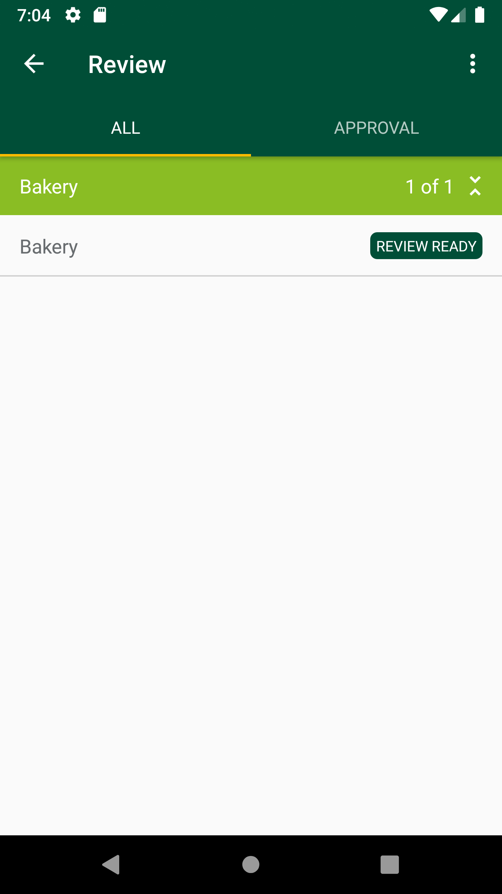
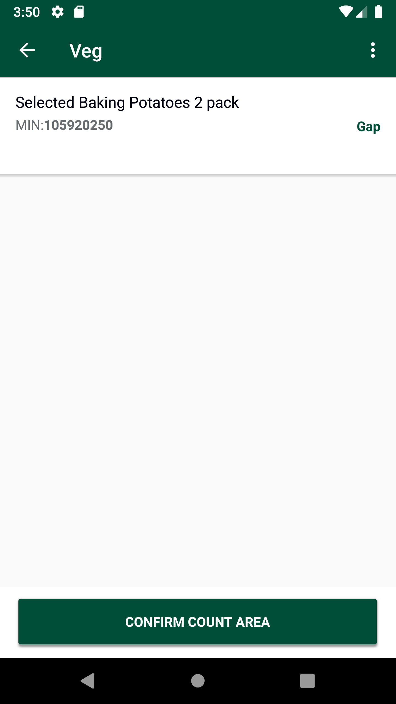

-
GLH extended scenarios
10:06:50 PM / 00:27:50:103 Fail
GLH extended scenarios
03.08.2024 10:06:50 PM 03.08.2024 10:34:40 PM 00:27:50:103 · #test-id=1@7761NewGlhPart2New_701PassTO CHANGE THE DEVICE TIMINGS AS REQUIREDPassTO CHANGE THE DEVICE TIMINGS AS REQUIREDGiven I send the time "07" and mins "00" and meridiem "am" and current date in listThen I Change timeThen I Change datePassTO CHANGE THE DEVICE TIMINGS AS REQUIREDGiven I send the time "03" and mins "30" and meridiem "pm" and current date in listThen I Change timeThen I Change datePassPre-requisite for all modules to generate access token and of Delete GLH Storewalk from ServicePassPre-requisite for all modules to generate access token and of Delete GLH Storewalk from ServiceGiven request is made to capture access token and post endpoint for user v2 for "" Then I Verify the Response Code for the following "- " is 200
And I get the field value for the field "access_token"And Get the generated Access Tocken for SMA app Login ServiceGiven Get request is made to Get storewalks service for current dateAnd Get Operation perform on service requestThen Verify Get storewalks service response for current dateThen Delete request is made to Delete GLH storewalk for store id "8"FailVerify and Scan Case and Single type of MIN for all department which include different count types in AM GLHFailVerify and Scan Case and Single type of MIN for all department which include different count types in AM GLHWhen I enter Username and Password for SMA Collegue userAnd I click on login button for SMAThen I click on 'stockMngmtText' on page 'HomePagePO_New'Then I click on "Shop Floor - Gap Scan"And Get the generated Access Tocken for SMA app Login ServiceThen I click on Fixture ScanAnd I click on barcode entry ButtonThen Enter "104065909" numberAnd I click on COUNT buttonAnd I enter quantity "200" for fixture and warehouseAnd I choose the plan from popup if multiple records presentThen I verify the if it is COUNTAnd I click on Back ButtonGiven Get request is made to Get storewalks service for current dateAnd Get Operation perform on service requestThen I verify Product id "104065909" for Store id "8" and Walk type "GapsHighsLows" is present in Get storewalk serviceThen I verify Capture details in storewalk for Product id "104065909" is Capture type "Count" Capture status "Incomplete" and Capture quantity "200"Then I verify Section status is "Available" in Get storewalk serviceThen I click on WareHouseThen I verify my min is present in the "Bakery" or notThen I click on Confirm Area CountThen I click on Confirm message after verifying itAnd I click on Back ButtonThen I click on ReviewThen I verify my min is present in the "Bakery"Then I select the "Bakery" and verify the status as ReviewReadyGiven Get request is made to Get storewalks service for current dateAnd Get Operation perform on service requestThen I verify Product id "104065909" for Store id "8" and Walk type "GapsHighsLows" is present in Get storewalk serviceThen I verify Capture details in storewalk for Product id "104065909" is Capture type "Count" Capture status "Complete" and Capture quantity "200"Then I verify Section status is "CountComplete" in Get storewalk serviceGiven Get request is made to Get storewalks service for current dateAnd Get Operation perform on service requestThen Get Walkids from Getstorewalk service Store id "8"And Get the walk id for "GapsHighsLows"Given Get request is made to Get walkItem service for store id "8" and product id "104065909"And Get Operation perform on service requestThen Verify Get walkitem service responseAnd I Verify Get walkitem UOM "EA",Count Type "104065909", SOH and Action Type "Include"com.morrisons.common.action.Hook.afterScenario(io.cucumber.java.Scenario)
And I verify Get walkitem pack is present or notStep skippedFailVerify and Scan Case and Single type of MIN for all department which include different count types in PM GapsPassVerify and Scan Case and Single type of MIN for all department which include different count types in PM GapsWhen I enter Username and Password for SMA Collegue userAnd I click on login button for SMAThen I click on 'stockMngmtText' on page 'HomePagePO_New'Then I click on "PM Gaps"Then I click on Fixture ScanAnd I click on barcode entry ButtonThen Enter "106938718" numberAnd I choose the plan from popup if multiple records presentAnd I click on OKAnd I verify Product is marked as GAPAnd I click on Back ButtonAnd I click on Back ButtonThen I click on WareHouseAnd I click on the "Fruit & Veg" availableThen I select one of the "Nuts"Then I verify product is displayed as gap in WarehouseGiven Get request is made to Get storewalks service for current dateAnd Get Operation perform on service requestThen Get Walkids from Getstorewalk service Store id "8"And Get the walk id for "Gaps"Given Get request is made to Get walkItem service for store id "8" and product id "106938718"And Get Operation perform on service requestThen Verify Get walkitem service responseAnd I Verify Get walkitem UOM "EA",Count Type "106938718", SOH and Action Type "Include"And I verify Get walkitem pack is present or notPassVerify and Scan Case and Single type of MIN for all department which include different count types in PM GapsWhen I enter Username and Password for SMA Collegue userAnd I click on login button for SMAThen I click on 'stockMngmtText' on page 'HomePagePO_New'Then I click on "PM Gaps"Then I click on Fixture ScanAnd I click on barcode entry ButtonThen Enter "103853612" numberAnd I choose the plan from popup if multiple records presentAnd I click on OKAnd I verify Product is marked as GAPAnd I click on Back ButtonAnd I click on Back ButtonThen I click on WareHouseAnd I click on the "Fruit & Veg" availableThen I select one of the "Fruit"Then I verify product is displayed as gap in WarehouseGiven Get request is made to Get storewalks service for current dateAnd Get Operation perform on service requestThen Get Walkids from Getstorewalk service Store id "8"And Get the walk id for "Gaps"Given Get request is made to Get walkItem service for store id "8" and product id "103853612"And Get Operation perform on service requestThen Verify Get walkitem service responseAnd I Verify Get walkitem UOM "PCS",Count Type "103853612", SOH and Action Type "Include"And I verify Get walkitem pack is present or notPassVerify and Scan Case and Single type of MIN for all department which include different count types in PM GapsWhen I enter Username and Password for SMA Collegue userAnd I click on login button for SMAThen I click on 'stockMngmtText' on page 'HomePagePO_New'Then I click on "PM Gaps"Then I click on Fixture ScanAnd I click on barcode entry ButtonThen Enter "104157328" numberAnd I choose the plan from popup if multiple records presentAnd I click on OKAnd I verify Product is marked as GAPAnd I click on Back ButtonAnd I click on Back ButtonThen I click on WareHouseAnd I click on the "Fruit & Veg" availableThen I select one of the "Prepared"Then I verify product is displayed as gap in WarehouseGiven Get request is made to Get storewalks service for current dateAnd Get Operation perform on service requestThen Get Walkids from Getstorewalk service Store id "8"And Get the walk id for "Gaps"Given Get request is made to Get walkItem service for store id "8" and product id "104157328"And Get Operation perform on service requestThen Verify Get walkitem service responseAnd I Verify Get walkitem UOM "PCS",Count Type "104157328", SOH and Action Type "Include"And I verify Get walkitem pack is present or notPassVerify and Scan Case and Single type of MIN for all department which include different count types in PM GapsWhen I enter Username and Password for SMA Collegue userAnd I click on login button for SMAThen I click on 'stockMngmtText' on page 'HomePagePO_New'Then I click on "PM Gaps"Then I click on Fixture ScanAnd I click on barcode entry ButtonThen Enter "103861399" numberAnd I choose the plan from popup if multiple records presentAnd I click on OKAnd I verify Product is marked as GAPAnd I click on Back ButtonAnd I click on Back ButtonThen I click on WareHouseAnd I click on the "Fruit & Veg" availableThen I select one of the "Salads"Then I verify product is displayed as gap in WarehouseGiven Get request is made to Get storewalks service for current dateAnd Get Operation perform on service requestThen Get Walkids from Getstorewalk service Store id "8"And Get the walk id for "Gaps"Given Get request is made to Get walkItem service for store id "8" and product id "103861399"And Get Operation perform on service requestThen Verify Get walkitem service responseAnd I Verify Get walkitem UOM "PCS",Count Type "103861399", SOH and Action Type "Include"And I verify Get walkitem pack is present or notPassVerify and Scan Case and Single type of MIN for all department which include different count types in PM GapsWhen I enter Username and Password for SMA Collegue userAnd I click on login button for SMAThen I click on 'stockMngmtText' on page 'HomePagePO_New'Then I click on "PM Gaps"Then I click on Fixture ScanAnd I click on barcode entry ButtonThen Enter "104840012" numberAnd I choose the plan from popup if multiple records presentAnd I click on OKAnd I verify Product is marked as GAPAnd I click on Back ButtonAnd I click on Back ButtonThen I click on WareHouseAnd I click on the "Fruit & Veg" availableThen I select one of the "Salads"Then I verify product is displayed as gap in WarehouseGiven Get request is made to Get storewalks service for current dateAnd Get Operation perform on service requestThen Get Walkids from Getstorewalk service Store id "8"And Get the walk id for "Gaps"Given Get request is made to Get walkItem service for store id "8" and product id "104840012"And Get Operation perform on service requestThen Verify Get walkitem service responseAnd I Verify Get walkitem UOM "PCS",Count Type "104840012", SOH and Action Type "Include"And I verify Get walkitem pack is present or notFailVerify and Scan Case and Single type of MIN for all department which include different count types in PM GapsWhen I enter Username and Password for SMA Collegue userAnd I click on login button for SMAThen I click on 'stockMngmtText' on page 'HomePagePO_New'Then I click on "PM Gaps"Then I click on Fixture ScanAnd I click on barcode entry ButtonThen Enter "105920250" numberAnd I choose the plan from popup if multiple records presentAnd I click on OKAnd I verify Product is marked as GAPAnd I click on Back ButtonAnd I click on Back ButtonThen I click on WareHouseAnd I click on the "Fruit & Veg" availableThen I select one of the "Veg"Then I verify product is displayed as gap in WarehouseGiven Get request is made to Get storewalks service for current dateAnd Get Operation perform on service requestThen Get Walkids from Getstorewalk service Store id "8"And Get the walk id for "Gaps"Given Get request is made to Get walkItem service for store id "8" and product id "105920250"And Get Operation perform on service requestThen Verify Get walkitem service responseAnd I Verify Get walkitem UOM "PCS",Count Type "105920250", SOH and Action Type "Include"com.morrisons.common.action.Hook.afterScenario(io.cucumber.java.Scenario)
And I verify Get walkitem pack is present or notStep skipped
-
java.lang.AssertionError
1 tests
java.lang.AssertionError
1 failedStatus Timestamp TestName Fail 22:12:52 PM And I Verify Get walkitem UOM "EA",Count Type "104065909", SOH and Action Type "Include" GLH extended scenarios.Verify and Scan Case and Single type of MIN for all department which include different count types in AM GLH.And I Verify Get walkitem UOM "EA",Count Type "104065909", SOH and Action Type "Include" -
java.lang.NullPointerException
1 tests
java.lang.NullPointerException
1 failedStatus Timestamp TestName Fail 22:34:38 PM And I Verify Get walkitem UOM "PCS",Count Type "105920250", SOH and Action Type "Include" GLH extended scenarios.Verify and Scan Case and Single type of MIN for all department which include different count types in PM Gaps.And I Verify Get walkitem UOM "PCS",Count Type "105920250", SOH and Action Type "Include"
-
@VerfandScanCandStypeofMIN
7 tests
@VerfandScanCandStypeofMIN
5 passed 2 failedStatus Timestamp TestName Fail 22:15:03 PM Verify and Scan Case and Single type of MIN for all department which include different count types in PM Gaps GLH extended scenarios.Verify and Scan Case and Single type of MIN for all department which include different count types in PM GapsPass 22:15:03 PM Verify and Scan Case and Single type of MIN for all department which include different count types in PM Gaps GLH extended scenarios.Verify and Scan Case and Single type of MIN for all department which include different count types in PM GapsPass 22:18:18 PM Verify and Scan Case and Single type of MIN for all department which include different count types in PM Gaps GLH extended scenarios.Verify and Scan Case and Single type of MIN for all department which include different count types in PM GapsPass 22:21:44 PM Verify and Scan Case and Single type of MIN for all department which include different count types in PM Gaps GLH extended scenarios.Verify and Scan Case and Single type of MIN for all department which include different count types in PM GapsPass 22:24:59 PM Verify and Scan Case and Single type of MIN for all department which include different count types in PM Gaps GLH extended scenarios.Verify and Scan Case and Single type of MIN for all department which include different count types in PM GapsPass 22:28:14 PM Verify and Scan Case and Single type of MIN for all department which include different count types in PM Gaps GLH extended scenarios.Verify and Scan Case and Single type of MIN for all department which include different count types in PM GapsFail 22:31:30 PM Verify and Scan Case and Single type of MIN for all department which include different count types in PM Gaps GLH extended scenarios.Verify and Scan Case and Single type of MIN for all department which include different count types in PM Gaps -
@7761NewGlhPart2New_701
11 tests
@7761NewGlhPart2New_701
8 passed 3 failedStatus Timestamp TestName Fail 22:06:50 PM GLH extended scenarios Pass 22:06:50 PM TO CHANGE THE DEVICE TIMINGS AS REQUIRED GLH extended scenarios.TO CHANGE THE DEVICE TIMINGS AS REQUIREDPass 22:08:57 PM Pre-requisite for all modules to generate access token and of Delete GLH Storewalk from Service GLH extended scenarios.Pre-requisite for all modules to generate access token and of Delete GLH Storewalk from ServiceFail 22:09:59 PM Verify and Scan Case and Single type of MIN for all department which include different count types in AM GLH GLH extended scenarios.Verify and Scan Case and Single type of MIN for all department which include different count types in AM GLHPass 22:13:00 PM TO CHANGE THE DEVICE TIMINGS AS REQUIRED GLH extended scenarios.TO CHANGE THE DEVICE TIMINGS AS REQUIREDPass 22:15:03 PM Verify and Scan Case and Single type of MIN for all department which include different count types in PM Gaps GLH extended scenarios.Verify and Scan Case and Single type of MIN for all department which include different count types in PM GapsPass 22:18:18 PM Verify and Scan Case and Single type of MIN for all department which include different count types in PM Gaps GLH extended scenarios.Verify and Scan Case and Single type of MIN for all department which include different count types in PM GapsPass 22:21:44 PM Verify and Scan Case and Single type of MIN for all department which include different count types in PM Gaps GLH extended scenarios.Verify and Scan Case and Single type of MIN for all department which include different count types in PM GapsPass 22:24:59 PM Verify and Scan Case and Single type of MIN for all department which include different count types in PM Gaps GLH extended scenarios.Verify and Scan Case and Single type of MIN for all department which include different count types in PM GapsPass 22:28:14 PM Verify and Scan Case and Single type of MIN for all department which include different count types in PM Gaps GLH extended scenarios.Verify and Scan Case and Single type of MIN for all department which include different count types in PM GapsFail 22:31:30 PM Verify and Scan Case and Single type of MIN for all department which include different count types in PM Gaps GLH extended scenarios.Verify and Scan Case and Single type of MIN for all department which include different count types in PM Gaps -
@timeChange
3 tests
@timeChange
3 passedStatus Timestamp TestName Pass 22:06:50 PM TO CHANGE THE DEVICE TIMINGS AS REQUIRED GLH extended scenarios.TO CHANGE THE DEVICE TIMINGS AS REQUIREDPass 22:06:50 PM TO CHANGE THE DEVICE TIMINGS AS REQUIRED GLH extended scenarios.TO CHANGE THE DEVICE TIMINGS AS REQUIREDPass 22:13:00 PM TO CHANGE THE DEVICE TIMINGS AS REQUIRED GLH extended scenarios.TO CHANGE THE DEVICE TIMINGS AS REQUIRED -
@a7CAndSForAllDeptDiffCntTypes
4 tests
@a7CAndSForAllDeptDiffCntTypes
2 passed 2 failedStatus Timestamp TestName Pass 22:08:57 PM Pre-requisite for all modules to generate access token and of Delete GLH Storewalk from Service GLH extended scenarios.Pre-requisite for all modules to generate access token and of Delete GLH Storewalk from ServicePass 22:08:57 PM Pre-requisite for all modules to generate access token and of Delete GLH Storewalk from Service GLH extended scenarios.Pre-requisite for all modules to generate access token and of Delete GLH Storewalk from ServiceFail 22:09:59 PM Verify and Scan Case and Single type of MIN for all department which include different count types in AM GLH GLH extended scenarios.Verify and Scan Case and Single type of MIN for all department which include different count types in AM GLHFail 22:09:59 PM Verify and Scan Case and Single type of MIN for all department which include different count types in AM GLH GLH extended scenarios.Verify and Scan Case and Single type of MIN for all department which include different count types in AM GLH -
@sma
11 tests
@sma
7 passed 4 failedStatus Timestamp TestName Pass 22:08:57 PM Pre-requisite for all modules to generate access token and of Delete GLH Storewalk from Service GLH extended scenarios.Pre-requisite for all modules to generate access token and of Delete GLH Storewalk from ServicePass 22:08:57 PM Pre-requisite for all modules to generate access token and of Delete GLH Storewalk from Service GLH extended scenarios.Pre-requisite for all modules to generate access token and of Delete GLH Storewalk from ServiceFail 22:09:59 PM Verify and Scan Case and Single type of MIN for all department which include different count types in AM GLH GLH extended scenarios.Verify and Scan Case and Single type of MIN for all department which include different count types in AM GLHFail 22:09:59 PM Verify and Scan Case and Single type of MIN for all department which include different count types in AM GLH GLH extended scenarios.Verify and Scan Case and Single type of MIN for all department which include different count types in AM GLHFail 22:15:03 PM Verify and Scan Case and Single type of MIN for all department which include different count types in PM Gaps GLH extended scenarios.Verify and Scan Case and Single type of MIN for all department which include different count types in PM GapsPass 22:15:03 PM Verify and Scan Case and Single type of MIN for all department which include different count types in PM Gaps GLH extended scenarios.Verify and Scan Case and Single type of MIN for all department which include different count types in PM GapsPass 22:18:18 PM Verify and Scan Case and Single type of MIN for all department which include different count types in PM Gaps GLH extended scenarios.Verify and Scan Case and Single type of MIN for all department which include different count types in PM GapsPass 22:21:44 PM Verify and Scan Case and Single type of MIN for all department which include different count types in PM Gaps GLH extended scenarios.Verify and Scan Case and Single type of MIN for all department which include different count types in PM GapsPass 22:24:59 PM Verify and Scan Case and Single type of MIN for all department which include different count types in PM Gaps GLH extended scenarios.Verify and Scan Case and Single type of MIN for all department which include different count types in PM GapsPass 22:28:14 PM Verify and Scan Case and Single type of MIN for all department which include different count types in PM Gaps GLH extended scenarios.Verify and Scan Case and Single type of MIN for all department which include different count types in PM GapsFail 22:31:30 PM Verify and Scan Case and Single type of MIN for all department which include different count types in PM Gaps GLH extended scenarios.Verify and Scan Case and Single type of MIN for all department which include different count types in PM Gaps
Started
Mar 8, 2024 10:06:46 PM
Ended
Mar 8, 2024 10:34:41 PM
Features Passed
0
Features Failed
1
Features
Scenarios
Steps
Timeline
Tags
| Name | Passed | Failed | Skipped | Others | Passed % |
|---|---|---|---|---|---|
| @VerfandScanCandStypeofMIN | 5 | 2 | 0 | 0 | 71.429% |
| @7761NewGlhPart2New_701 | 8 | 3 | 0 | 0 | 72.727% |
| @timeChange | 3 | 0 | 0 | 0 | 100% |
| @a7CAndSForAllDeptDiffCntTypes | 2 | 2 | 0 | 0 | 50% |
| @sma | 7 | 4 | 0 | 0 | 63.636% |